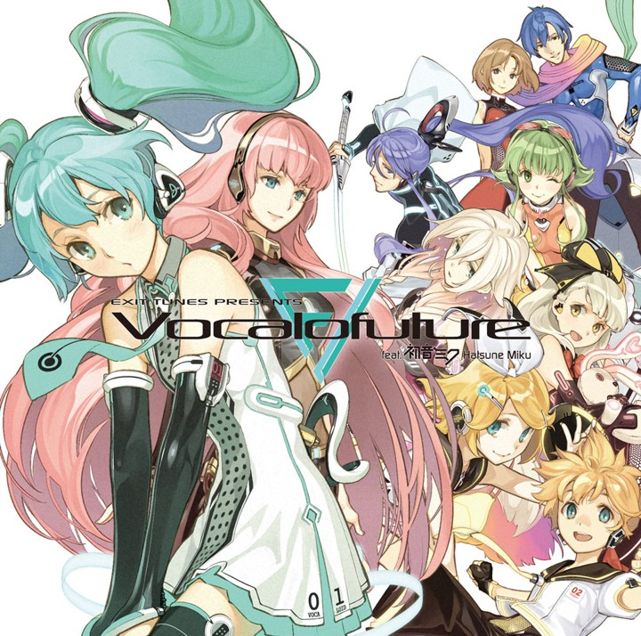
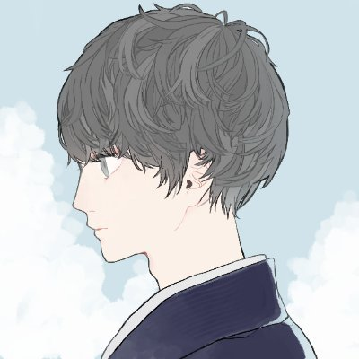
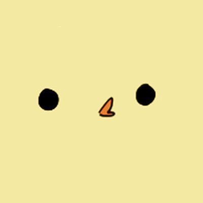
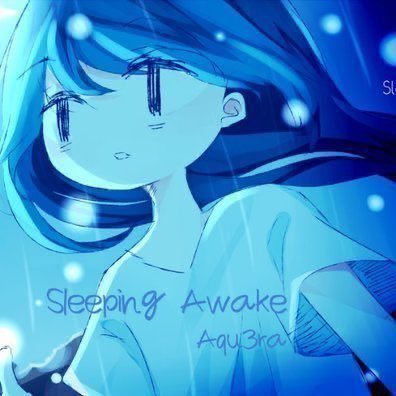

什麼是 Vocaloid？

Vocaloid 是由日本 Yamaha 開發的語音合成歌唱軟體， 使用者可以輸入旋律與歌詞，透過聲庫角色合成歌曲。
其簡稱為「ボカロ（Vocalo）」， 並發展出龐大的創作者與粉絲文化。
聲庫介紹
初音未來
鏡音鈴、連
巡音流歌
代表歌曲
名詞簡介
調教
VOCALOID 參數調整
P主
使用 Vocaloid 創作歌曲的製作人
殿堂
播放數超過 10 萬
傳說
播放數超過 100 萬
神話
播放數超過 1000 萬
P主介紹
Neru（押入れP）
PV多是自己的原創角色和故事設定
Neru家 泛指出現於Neru作品裡的原創人物
常和456、しづ、りゅうせー PV繪師合作
常用的Vocaloid為鏡音雙子

一二三
擅長加入了三味線和日本箏的搖滾曲風
常和慧子、休符 PV繪師合作
常用的Vocaloid有初音、音街鰻
Giga(ギガP)
電音風格強烈 很多工口、中毒性高的曲子
目前共有12首傳說曲，是傳說曲數第五多的P主
跟れをる關係很好，常是作詞擔當
常用的Vocaloid有鏡音雙子、GUMI

Kira
來自德國的P主
偶像是ギガP 2020年9月4日和ギガP合作原創曲GETCHA!
常和Ekkoberry PV繪師合作(幾乎所有歌曲
常用的Vocaloid有GUMI

Aqu3ra(あくえら)
帶點夏日氣息、虛幻(?的電音曲風
YT和推特都有另一個叫做Apu3ra的帳號
PV風格通常是藍色調 氣泡感的一圖
常用的Vocaloid有初音、flower